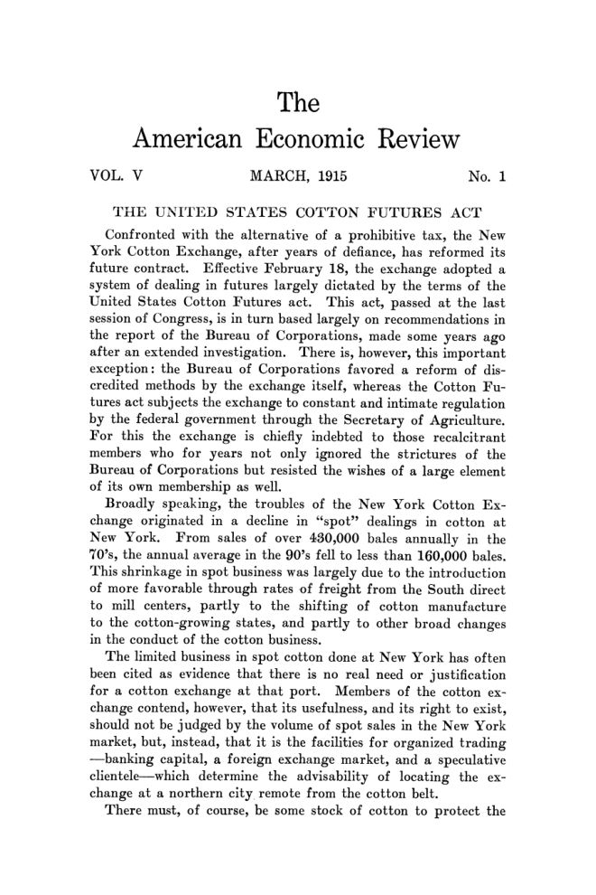

Conant, 1915: por que a bolsa de algodão foi parar sob o governo?
Leitura: 8 min
Conant explica como a New York Cotton Exchange perdeu o controle do próprio contrato: diferenças de preço fixadas por comitê, hedge que não protegia e uma lei que deu a palavra final ao secretário da Agricultura.


Em 18 de fevereiro de 1915, a New York Cotton Exchange começou a negociar seus contratos futuros por um sistema em grande parte ditado pela United States Cotton Futures Act. Luther Conant Jr. descreve a mudança como uma rendição: depois de anos de resistência, a bolsa reformou o contrato porque a alternativa era pagar um imposto proibitivo sobre cada operação fora das regras.
A lei se apoia em recomendações feitas anos antes pelo Bureau of Corporations, depois de longa investigação. Há, porém, uma diferença decisiva. O Bureau propunha que a própria bolsa corrigisse seus métodos; a lei submete a bolsa a uma regulação constante e minuciosa do governo federal, por meio do secretário da Agricultura. Conant atribui o desfecho aos membros que, por anos, ignoraram as críticas do Bureau e resistiram até à vontade de boa parte dos próprios associados.
Por que o mercado de Nova York encolheu?
Os problemas começaram, segundo Conant, com o declínio do comércio de algodão físico em Nova York. Na década de 1870, a cidade vendia mais de 430 mil fardos por ano; na de 1890, a média ficou abaixo de 160 mil. Três fatores explicam a queda: fretes diretos mais favoráveis do Sul para os centros fabris, a mudança da indústria têxtil para os estados produtores e outras transformações no comércio do algodão.
Os críticos concluíam que não havia razão para uma bolsa de algodão em Nova York. Os membros respondiam que a utilidade da bolsa não se media pelas vendas físicas, mas pelas condições para o comércio organizado: capital bancário, mercado de câmbio e uma clientela de especuladores. Ainda assim, era preciso algum estoque de algodão para garantir os compromissos dos vendedores, e foi para atraí-lo que a bolsa mudou suas regras, com as consequências que Conant descreve.
Como funciona um contrato de base?
O contrato futuro de algodão não exige a entrega de um tipo específico. O vendedor pode entregar o middling, tipo de base, ao preço exato do contrato, ou qualquer outro tipo admitido, com uma diferença acrescentada ou descontada conforme a qualidade seja superior ou inferior. A escolha é inteiramente do vendedor, que pode até misturar tipos. Na prática, as entregas em Nova York eram muito misturadas e compostas sobretudo pelos tipos que o mercado físico tinha mais dificuldade de vender.
Conant considera esse desenho a única forma praticável de mercado futuro de algodão. A proporção de cada tipo na safra varia muito de um ano para outro e pode mudar de repente com uma tempestade, que bate o algodão na terra, ou com uma geada precoce, que mancha os capulhos. Num contrato de tipo específico, os vendedores viveriam sob a ameaça de um cerco de mercado e não haveria volume suficiente de vendas a termo.
Conant insiste que esse ponto não pode ser esquecido: “o contrato futuro de algodão é um contrato de base”. (“the cotton-future contract is a basis contract”)
A contrapartida, defendida pelo Bureau of Corporations, é que o comprador receba ao menos o equivalente em dinheiro. As diferenças do contrato devem acompanhar as diferenças reais do mercado físico sob concorrência. Isso não protege o comprador da queda do middling, mas evita que diferenças arbitrárias agravem sua perda quando ele recebe outros tipos.
O que deu errado com as diferenças fixadas por comitê?
O sistema de diferenças comerciais, apuradas no mercado físico, é o único usado em Liverpool e Nova Orleans e foi por muitos anos o de Nova York. Com o estoque local cada vez menor, ficou mais difícil apurar as diferenças e mais fácil manipulá-las. A bolsa criou então um comitê de revisão com poder de fixá-las por períodos definidos. A partir de 1897, só havia duas revisões por ano, uma em setembro e outra em novembro, e muitas vezes nada mudava; as diferenças podiam ficar inalteradas por um ano ou mais.
Como a oferta e a procura atuam também sobre o valor relativo dos tipos, as diferenças decretadas se afastavam das do mercado. Algum tipo ficava sobrevalorizado em relação ao middling, e o vendedor, dono da escolha, passava a entregá-lo. O comprador que temia receber esse algodão vendia o contrato; o novo comprador reduzia o lance para se proteger. O resultado era uma depreciação artificial do contrato.
O efeito mais grave era sobre o hedge. O comerciante que compra algodão físico antes de ter pedidos das fiações vende um contrato futuro; se o preço cai, o ganho no futuro compensa a perda no físico. Graças a essa proteção, diz Conant, centenas de milhares de fardos passavam pelo intermediário a um custo de até 50 centavos por fardo, cerca de 1% do valor com o algodão a 10 centavos a libra-peso. Em 1906–1907, com o middling em alta, os contratos de hedge caíram e se tornaram fonte de perda adicional; muitos especuladores também foram eliminados.
O preço distorcido do futuro, transmitido diariamente ao mundo, afetava ainda o produtor, que muitas vezes vende sua colheita com base nas cotações de Nova York, e o fabricante. Conant cita uma resolução de 1908 da American Cotton Manufacturers Association, segundo a qual compradores de tecidos para exportação se orientavam pelas cotações da bolsa e eram levados a erro sobre o custo da matéria-prima.
O que a lei muda?
A lei obriga a bolsa a voltar às diferenças comerciais. Quando o mercado de Nova York for estreito demais, as diferenças serão a média das diferenças comerciais reais, no sexto dia antes da entrega, em pelo menos cinco praças designadas pelo secretário da Agricultura. Como essas diferenças devem seguir os padrões oficiais do Departamento de Agricultura, ainda pouco usados no Sul, o secretário pode fixar regras para convertê-las.
Conant reconhece a objeção de que isso troca o decreto de um comitê pelo decreto de um funcionário. A distinção, para ele, é que as diferenças apuradas sob as regras do secretário podem ser corrigidas em 24 horas, enquanto as do comitê ficavam fixas por quase um ano. Como as variações diárias costumam ser uma pequena fração de centavo, o erro de apuração tende a ser pequeno.
A lei traz outras mudanças. A seção 6 exige que cada fardo entregue seja identificado com seu tipo; até então, o recebedor só sabia quantos fardos de cada tipo havia num lote, que tinha em média cerca de 10 fardos, e precisava amostrar tudo. O secretário da Agricultura também passa a arbitrar disputas sobre classificação. Por trás de tudo está o imposto de 2 centavos por libra-peso sobre contratos que não cumpram a lei.
Conant observa que boa parte dos membros, às vezes a maioria, já defendia a reforma, mas os estatutos exigiam votação maior. Termina registrando que, para os homens de negócios que lamentam a tendência a mais regulação estatal, o poder dado a um ministro parece infeliz, e pergunta se ele levará a um controle mais estreito das bolsas de algodão e de outras bolsas especulativas.
Na minha leitura
Na minha leitura, o artigo é uma boa lição sobre referência de preço. O contrato futuro só cumpre sua função se acompanhar o preço do bem físico, e a regra que liga um ao outro, a tabela de diferenças entre tipos, é tão importante quanto o preço principal. Conant mostra que uma referência rígida, revista duas vezes por ano, transfere risco de forma sistemática para quem não escolhe o que recebe.
O argumento também mostra por que a regulação, nesse caso, foi sobre procedimento, e não sobre preço. A lei não diz quanto vale o algodão; diz de onde deve vir a informação e com que rapidez ela pode ser corrigida. A comparação de Conant entre 24 horas e quase um ano resume a escolha institucional.
Glossário
- Contrato de base
- contrato futuro que admite vários tipos de mercadoria, com diferenças em relação a um tipo padrão.
- Diferenças comerciais
- diferenças de preço entre tipos de algodão apuradas no mercado físico.
- Diferenças fixadas
- diferenças decretadas por um comitê da bolsa para um período determinado.
- Mês corrente
- contrato futuro com vencimento no mês em curso, que deve acompanhar o preço físico.
- Cerco de mercado
- controle da oferta entregável que obriga os vendidos a recomprar a preços altos.
Fontes
- The United States Cotton Futures Act — Luther Conant Jr. (pp. 2–11). JSTOR · Internet Archive (PDF)
- Edição completa, com os demais artigos: Nº 134 do Arquivo.
Documento em domínio público (EUA, publicado antes de 1931), via JSTOR Early Journal Content e Internet Archive. Resumo e comentário do autor deste site, sem afiliação com a American Economic Association. Encontrou um erro? Escreva: a correção é publicada no próprio texto, com data.
↑ Nº 134 · Março de 1915: futuros de algodão, ferrovias, crédito rural e a Lei Clayton Stevens, 1915: o que a Lei Clayton muda no controle dos trustes? →